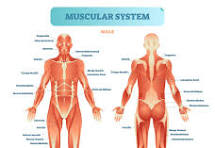

The Importance of Fitness
In life, it is important to always priotize your fitness, given its several benefits mentally, physically, and even spiritually for some. In basketball, it is no different, as having definat physical capabilities puts you in front of 90% of other players. They key however, is to know which muscles to train, when and how to train.
What are the most important muscle groups basketball players should focus on ?
The important muscles for basketball players are their quads, hamstrings, glutes, hip flexors and gastrocnemius for legs. Also, all core muscles (transverse muscles, lower back and obliques) as well as shoulders, chest and triceps.
Which exercises improve vertical jump and explosiveness ?
There are many exercises that can be done to jump higher and become more explosive, like doing back squat, trap bar deadlift, front squats, power cleans, depth and drop jumps.
What exercises help increase speed and agility on the court ?
As for agility, basketball players should opt for exercises like linear and uphill sprints, acceleration drills, ladder drills, ABC drills, agility drills such as pro agility test and the T-test
How many times a week should basketball players lift weights vs. do conditioning ?
Doing conditioning or lifiting weights really depends on the season. In offseason, players can do up to 5 days of lifting and conditioning. In season, up to 2 per week and it should be a maintenance session while conditioning is done in basketball practice to reduce training volume.
What drills or exercises improve reaction time and quickness ?
Improving reaction time and quickness is achievable through cognitive drills such as agility drills with a verbas or visual cues. Also, light equipment like blazepods and ladder drills are also effective.
How do you train core strength specifically for basketball movements ?
Strengthein your core for elevated basketball performance is mainly training through all planes of motion, specially transverse plane, such as using medicine balls or landmine variations.
What plyometric exercises are most effective for improving first-step explosiveness ?
In order too start jumping higher, certain exercises like drop and depth jumps, lateral jumps or skater jumps, kneeling jumps, or hurdle jumps can effectively help increase vertical jump.
What simple bodyweight exercises can players do at home with no equipment ?
Simple but efficient execrises that require bodyweight only include Pushups, squats, Bulgarian squats, lunges, wall sits, all kind of planks, sit-ups, leg raises, Russian twists.